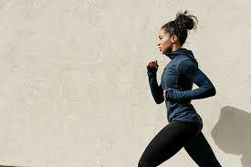
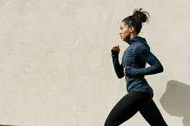
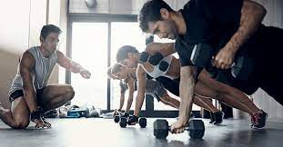
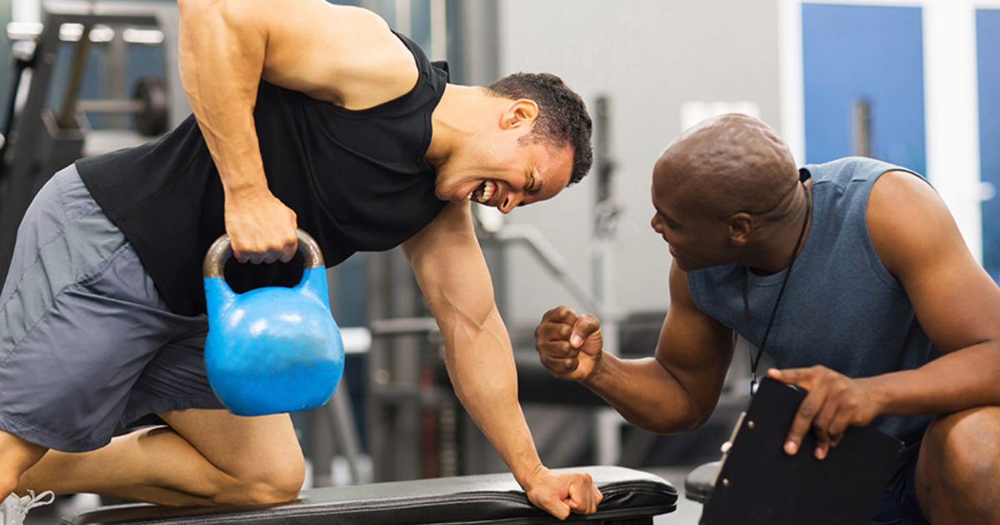
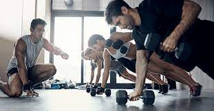
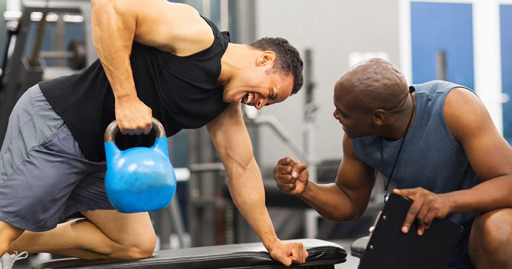

Weights

Our facility includes a weight training area with several weight options. Build lean muscle with weights and improve your core with weight training.
- Dumbbells
- Kettle Bells
- Barbells
Cardio
 


Burn fat through cardio workouts. If you need to lose 20lbs or more, include at least 30 minutes of cardio each day. We have several equipment choices for your workout.
- Treadmils
- Elipitical Machines
- Exercise Bikes
- Consistent Support and Motivation
Personal Training

 
|

|
Our certified personal trainers work with you one on one to help you obtain your fitness goals. Our personal trainers keep you motivated and push you farther than you would push yourself. When you feel like you cannot od one more rep, they tell you that you can. Personal training has many benefits:
- Accountability
- Personalized Program
- Consistent Support and Motivation
Common Exercises
The following are commom exercises that we encourage our cilents to do as part of their daily exercise routine.
- Burpee
- Burpees are a great, full body exercise to increase your strength and endurance.
Begin in a standing position, drop into a squat and extend your hands forward, kick your
feet back and then forward again quickly, and then jump up from a squatted position
- Plank
- Planks build your core strength To perform a plank, get in a push up position and rest your forearms on the floor. Hold the position as long as you can.
- Mountain Climber
- Mountain climbers are a good cairdo exercise. Place your hands on the floor in a push up position, then bring one knee up to your chest and then switch as quickly as you can (as through you are climbing a mountain)
For more information about how to stay active, visit fitness.gov.